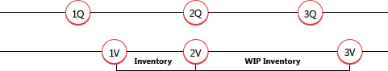

Designdetails: Neubewertung
Sie können den Lagerbestand basierend auf der Bewertungsbasis, die den Lagerwert am genauesten wiedergibt, neu bewerten. Sie können eine Neubewertung auch zurückdatieren, um den Wareneinsatz (COGS) ordnungsgemäß für Artikel zu aktualisieren, die Sie bereits verkauft haben. Artikel, bei denen die Lagerabgangsmethode „Standard“ verwendet wird, und die noch nicht vollständig fakturiert wurden, können ebenfalls neu bewertet werden.
In Business Central wird die folgende Flexibilität für die Neubewertung unterstützt:
- Die neu bewertbare Menge kann für jedes Datum berechnet werden, auch zeitlich rückwärts.
- Für Artikel mit der Kostenberechnungsmethode Standard sind Soll-Kosten-Posten in der Neubewertung enthalten.
- Bestandsminderungen, die von der Neubewertung betroffen sind, werden erkannt.
Neubewertbare Menge berechnen
Die Menge, die Sie neu bewerten können, ist die Restmenge im Lager, die an einem vorgegebenen Datum verfügbar ist. Die Menge ist die Summe der vollständig fakturierten Artikelposten, die Sie am oder vor dem Neubewertungsdatum buchen.
Hinweis
Artikel mit der Lagerabgangsmethode "Standard" werden bei der Berechnung der neubewertbaren Menge pro Artikel, Menge, Lagerort und Variante unterschiedlich berechnet. Die Mengen und Werte von Artikelposten, die noch nicht vollständig fakturiert wurden, werden in der neu bewertbaren Menge eingeschlossen.
Nachdem eine Neubewertung gebucht wurde, können Sie einen Lagerzugang oder einen Abgang mit einem Buchungsdatum buchen, das vor dem Neubewertungsbuchungsdatum liegt. Diese Menge wird jedoch nicht durch die Neubewertung beeinflusst. Um den Lagerbestand auszugleichen, wird nur die ursprüngliche neu bewertbare Menge berücksichtigt.
Da Sie die Neubewertung an jedem beliebigen Datum durchführen können, müssen Sie Konventionen dafür haben, wann ein Artikel als Teil des Lagerbestands gilt. Wenn beispielsweise der Artikel im Lager ist und der Artikel WIP (WIP) ist.
Beispiel
Im folgenden Beispiel wird gezeigt, wann ein WIP-Artikel Teil des Bestands wird. Das Beispiel basiert auf der Produktion einer Kette mit 150 Gliedern.

1Q: Der Benutzer bucht die eingekauften Links als erhalten. Die folgende Tabelle zeigt den sich daraus ergebenden Artikelposten.
| Buchungsdatum | Artikel | Postentyp | Menge | Eingabenr. |
|---|---|---|---|---|
| 01-01-20 | LINK | Einkauf | 150 | 1 |
Hinweis
Jetzt ist ein Artikel mit der Lagerabgangsmethode "Standard" für eine Neubewertung verfügbar.
1V: Der Benutzer bucht die eingekauften Links als fakturiert und die Links werden aus finanzieller Sicht Teil des Lagerbestands. Die folgende Tabelle zeigt die sich daraus ergebenden Wertposten.
| Buchungsdatum | Postentyp | Bewertungsdatum | Einstandsbetrag (tatsächl.) | Artikelposten Lfd. Nr. | Lfd. Nr. |
|---|---|---|---|---|---|
| 01-15-20 | EK-Preis | 01-01-20 | 150.00 | 1 | 1 |
2Q + 2V: Der Benutzer bucht die eingekauften Links als verbraucht für die Produktion der Eisenkette. Aus finanziellen Gesichtspunkten werden die Links Teil des WIP-Bestands. Die folgende Tabelle zeigt den sich daraus ergebenden Artikelposten.
| Buchungsdatum | Artikel | Postentyp | Menge | Lfd. Nr. |
|---|---|---|---|---|
| 02-01-20 | LINK | Verbrauch | -150 | 1 |
Die folgende Tabelle zeigt den sich daraus ergebenden Wertposten.
| Buchungsdatum | Postentyp | Bewertungsdatum | Einstandsbetrag (tatsächl.) | Artikelposten Lfd. Nr. | Lfd. Nr. |
|---|---|---|---|---|---|
| 02-01-20 | EK-Preis | 02-01-20 | -150.00 | 2 | 2 |
Das Bewertungsdatum wird auf das Datum der Verbrauchsbuchung (02-01-20) als regelmäßiger Lagerabgang festgelegt.
3Q: Der Benutzer bucht die Kette als fertig gestellt und schließt den Fertigungsauftrag ab. Die folgende Tabelle zeigt den sich daraus ergebenden Artikelposten.
| Buchungsdatum | Artikel | Postentyp | Menge | Postennr. |
|---|---|---|---|---|
| 02-15-20 | Kette | Istmeldung | 1 | 3 |
3V: Der Benutzer führt die Kosten anpassen - Artikeleingabe-Stapelverarbeitung aus, die die Kette als fakturiert bucht, um anzugeben, dass aller Materialverbrauch vollständig fakturiert wurde. Aus finanziellen Gesichtspunkten sind die Links nicht mehr Teil des WIP-Bestands, wenn die Ausgabe vollständig fakturiert und angepasst ist. Die folgende Tabelle zeigt die sich daraus ergebenden Wertposten.
| Buchungsdatum | Postentyp | Bewertungsdatum | Einstandsbetrag (tatsächl.) | Artikelposten Lfd. Nr. | Lfd. Nr. |
|---|---|---|---|---|---|
| 01-15-20 | EK-Preis | 01-01-20 | 150.00 | 2 | 2 |
| 02-01-20 | EK-Preis | 02-01-20 | -150.00 | 2 | 2 |
| 02-15-20 | Direkte Kosten | 02-15-20 | 150.00 | 3 | 3 |
Soll-Kosten in der Neubewertung
Die Menge, die Sie neu bewerten können, wird als die Gesamtsumme der Mengen vollständig fakturierter Artikelposten berechnet, die Sie an oder vor dem Neubewertungsdatum gebucht haben. Wenn mehrere Artikel eingegangen sind oder geliefert werden, aber noch nicht fakturiert sind, können Sie deren Lagerwert nicht berechnen. Artikel mit der Lagerabgangsmethode „Standard“ werden nicht auf diese Art begrenzt.
Hinweis
Eine weitere Art von erwarteten Kosten, die neubewertet werden können, ist der WIP-Bestand, für den bestimmte Regeln gelten. Weitere Informationen finden Sie unter WIP Neubewerten von Lagerbestand.
Wenn Sie die neu bewertbare Menge für Artikel mit der Lagerabgangsmethode „Standard“ berechnen, enthält die Berechnung Artikelposten, die noch nicht vollständig fakturiert sind. Diese Posten werden neu bewertet, wenn Sie die Neubewertung buchen. Wenn Sie den neu bewerteten Posten fakturieren, werden die folgenden Wertposten erstellt:
- Der übliche fakturierte Wertposten mit dem Postentyp Direkte Kosten. Der Kostenbetrag für diesen Posten entspricht den direkten Kosten aus der Herkunftszeile.
- Ein Wertposten mit dem Postentyp Abweichung. Dieser Eintrag erfasst die Differenz zwischen den fakturierten Kosten und dem neu bewerteten Einstandspreis.
- Ein Wertposten mit dem Postentyp Neubewertung. Dieser Posten erfasst die Stornierung der Neubewertung der Soll-Kosten.
Beispiel
Das folgende Beispiel basiert auf der Produktion der Kette im vorherigen Beispiel. Dieses Beispiel veranschaulicht, wie die drei Arten von Einträgen basierend auf dem folgenden Szenario erstellt werden:
- Sie buchen die eingekauften Glieder als mit einem Einstandspreis von LW 2.00 erhalten.
- Sie buchen eine Neubewertung der Links durch einen neuen Einstandspreis von LW 3.00 und aktualisiert den Einstandspreis (fest) auf LW 3.00.
Sie buchen den ursprünglichen Einkauf der Kettenglieder als fakturiert, wodurch folgende Wertposten erstellt werden:
- Ein fakturierter Wertposten mit dem Postentyp Direkte Kosten.
- Ein Wertposten mit dem Postentyp Neubewertung zur Erfassung der Umkehrung der Neubewertung der erwarteten Kosten.
- Ein Wertposten mit dem Postentyp Abweichung, der die Differenz zwischen den fakturierten Kosten und den neu bewerteten Standardkosten aufzeichnet.
Die folgende Tabelle zeigt die Ergebnisse.
| Schritt | Buchungsdatum | Postenart | Bewertungsdatum | Einstandsbetrag (erwartet) | Einstandsbetrag (tatsächl.) | Artikelposten Lfd. Nr. | Lfd. Nr. |
|---|---|---|---|---|---|---|---|
| 1. | 01-15-20 | EK-Preis | 01-15-20 | 300.00 | 0.00 | 1 | 1 |
| 2. | 01-20-20 | Neubewertung | 01-20-20 | 150.00 | 0.00 | 1 | 2 |
| 3.a. | 01-15-20 | EK-Preis | 01-15-20 | -300.00 | 0.00 | 1 | 3 |
| 3.b. | 01-15-20 | Neubewertung | 01-20-20 | -150.00 | 0.00 | 0 | 4 |
| 3.c. | 01-15-20 | Abweichung | 01-15-20 | 0.00 | 450.00 | 0 | 5 |
Festlegen, ob eine Neubewertung einen Lagerabgang beeinflusst
Verwenden Sie das Datum der Buchung oder der Neubewertung, um zu ermitteln, ob ein Lagerabgang von einer Neubewertung beeinflusst wird.
Die folgende Tabelle zeigt die Kriterien, die für einen Artikel verwendet werden, bei dem nicht die Kostenberechnungsmethode „Durchschnitt“ verwendet wird.
| Szenario | Postennummer | Zeitablauf | Beeinflusst durch Neubewertung |
|---|---|---|---|
| A | Früher als die Neubewertungsposten-Nummer | Früher als das Neubewertungsbuchungsdatum | Nein |
| B | Früher als die Neubewertungsposten-Nr. | Gleich Neubewertungsbuchungsdatum | Nein |
| L | Früher als die Neubewertungsposten-Nr. | Später als das Neubewertungsbuchungsdatum | Ja |
| T | Später als die Neubewertungsposten-Nr. | Früher als das Neubewertungsbuchungsdatum | Ja |
| O | Später als die Neubewertungsposten-Nr. | Gleich Neubewertungsbuchungsdatum | Ja |
| W | Später als die Neubewertungsposten-Nr. | Später als das Neubewertungsbuchungsdatum | Ja |
Beispiel
Das folgende Beispiel zeigt die Neubewertung eines Artikels, bei dem die FIFO-Kostenbewertungsmethode verwendet wird. Das Beispiel basiert auf dem folgenden Szenario:
- Am 01-01-20 buchen Sie einen Einkauf von 6 Einheiten.
- Am 02-01-20 buchen Sie einen Verkauf von 1 Einheit.
- Am 03-01-20 buchen Sie einen Verkauf von 1 Einheit.
- Am 04-01-20 buchen Sie einen Verkauf von 1 Einheit.
- Am 03-01-20 berechnen Sie den Lagerwert für den Artikel und buchen eine Neubewertung des Einstandspreises des Artikels von LW 10.00 auf LW 8.00.
- Am 02-01-20 buchen Sie einen Verkauf von 1 Einheit.
- Am 03-01-20 buchen Sie einen Verkauf von 1 Einheit.
- Am 04-01-20 buchen Sie einen Verkauf von 1 Einheit.
- Sie führen die Stapelverarbeitung Lagerreg. fakt. Einst. Preise aus.
Die folgende Tabelle zeigt die sich daraus ergebenden Wertposten.
| Szenario | Buchungsdatum | Postentyp | Bewertungsdatum | Bewertete Menge | Einstandsbetrag (tatsächl.) | Artikelposten Lfd. Nr. | Lfd. Nr. |
|---|---|---|---|---|---|---|---|
| 01-01-20 | Einkauf | 01-01-20 | 6 | 60.00 | 1 | 1 | |
| 03-01-20 | Neubewertung | 03-01-20 | 4 | -8.00 | 1 | 5 | |
| A | 02-01-20 | Verkauf | 02-01-20 | -1 | -10.00 | 2 | 2 |
| B | 03-01-20 | Verkauf | 03-01-20 | -1 | -10.00 | 3 | 3 |
| L | 04-01-20 | Verkauf | 04-01-20 | -1 | -10.00 | 4 | 4 |
| 04-01-20 | Verkauf | 04-01-20 | -1 | 2.00 | 4 | 9 | |
| T | 02-01-20 | Verkauf | 03-01-20 | -1 | -10.00 | 5 | 6 |
| 02-01-20 | Verkauf | 03-01-20 | -1 | 2.00 | 5 | 10 | |
| O | 03-01-20 | Verkauf | 03-01-20 | -1 | -10.00 | 6 | 7 |
| 03-01-20 | Verkauf | 03-01-20 | -1 | 2.00 | 6 | 11 | |
| W | 04-01-20 | Verkauf | 04-01-20 | -1 | -10.00 | 7 | 8 |
| 04-01-20 | Verkauf | 04-01-20 | -1 | 2.00 | 7 | 12 |
WIP-Lagerneubewertung
Die Neubewertung des WIP-Lagerbestands bedeutet, dass Sie Komponenten neu bewerten, die als WIP-Lagerbestand registriert sind.
Es ist wichtig, Konventionen zu haben, die steuern, wann ein Artikel aus finanzieller Sicht zum WIP-Lagerbestand gehört. In Business Central bestehen die folgenden Konventionen:
- Mit dem Buchen eines fakturierten Einkaufs wird eine eingekaufte Komponente Teil des Rohmaterialbestands.
- Eine eingekaufte/als Untermontage verbaute Komponente wird Teil des WIP-Lagerbestands mit dem Buchen ihres Verbrauchs in Verbindung mit einem Fertigungsauftrag.
- Eine eingekaufte/als Untermontage verbaute Komponente bleibt Teil des WIP-Lagerbestands bis zu dem Zeitpunkt, an dem Sie einen Fertigungsauftrag (Produktionsartikel) fakturieren.
Die Art, wie das Bewertungsdatum des Wertpostens von Verbrauch festgelegt wird, folgt denselben Regeln wie für Nicht-WIP-Bestand. Weitere Informationen finden Sie unter Festlegen, ob eine Neubewertung einen Lagerabgang beeinflusst.
Sie können WIP-Lagerbestand unter folgenden Bedingungen neu bewerten:
- Das Neubewertungsdatum liegt vor den Buchungsdaten der entsprechenden Artikelposten vom Typ „Verbrauch“.
- Sie haben den Produktionsauftrag nicht fakturiert.
Achtung
Der Bericht Bestandsbewertung - WIP zeigt den Wert der gebuchten Fertigungsauftragsposten und kann für neu bewertete WIP-Artikel etwas irreführend sein.
Artikel mit der Kostenberechnungsmethode „Durchschnitt“ neu bewerten
Sie können Artikel, bei denen die Kostenberechnungsmethode „Durchschnitt“ verwendet wird, nur dann neu bewerten, wenn Berechnen pro auf Artikel eingestellt ist.
Sie können eine Neubewertung nur am Ende des Zeitraums durchführen, der im Feld Durchschnittskostenperiode auf der Seite Lagereinrichtung ausgewählt wurde.
Die Neubewertung wirkt sich nicht auf negative Transaktionen im aktuellen Monat aus, weshalb vollständig angewendete Eingangsbuchungen auch nicht berücksichtigt werden.
Beispiel
Dieses Beispiel zeigt, was passiert, wenn Sie den Lagerwert auf der Seite Element Neubewertungs Buch.-Blatt berechnen. Auf der Seite Lagereinrichtung wird Artikel im Feld Einst.-Pr. (durchschn.) Ber.-Art ausgewählt, und Monat wird im Feld Durchschnittskostenperiode ausgewählt.
Die folgende Tabelle zeigt Artikelposten für den Beispiel-Durchschnittkostenartikel, ITEM1.
| Buchungsdatum | Artikelpostenart | Menge | Einstandsbetrag (tatsächl.) | Postennummer |
|---|---|---|---|---|
| 25-04-23 | Einkauf | 5 | 5.00 | 0 |
| 26-04-23 | Einkauf | 3 | 3.00 | 2 |
| 27-04-23 | Verkauf | -5 | -5.00 | 3 |
| 28-04-23 | Verkauf | -1 | -1.00 | 4 |
| 13-05-23 | Einkauf | 2 | 20.00 | 5 |
| 17-06-23 | Verkauf | -6 | -22.00 | 6 |
Die folgende Tabelle zeigt das Ergebnis der Ausführung des Berichts Lagerwert berechnen mit unterschiedlichen Bereitstellungsdaten.
| Buchungsdatum | Menge | Kommentar |
|---|---|---|
| 30-04-23 | 2 | Beinhaltet nur die Restmenge aus Posten 2. Posten 1 wird vollständig vor dem Buchungsdatum angewendet, Posten 5 liegt nach dem Buchungsdatum. |
| 31-05-23 | 4 | Beinhaltet nur die Restmengen aus Posten 2 und 13. |
| 30-06-23 | 0 | Zum Buchungsdatum ist keine Restmenge vorhanden. |
Das Ergebnis der folgenden Posten ist 0, unabhängig vom Buchungsdatum.
| Buchungsdatum | Artikelpostenart | Menge | Einstandsbetrag (tatsächl.) | Postennummer |
|---|---|---|---|---|
| 13-05-23 | Einkauf | 5 | 5.00 | 0 |
| 26-04-23 | Verkauf | -5 | 5.00 | 2 |
Siehe auch
Designdetails: Lagerbewertung
Designdetails: Kostenberechnungsmethoden
Designdetails: Lagerwert ermitteln
Verwalten der Lagerregulierung
Finanzen
Arbeiten mit Business Central
Kostenlose E-Learning-Module für Business Central finden Sie hier